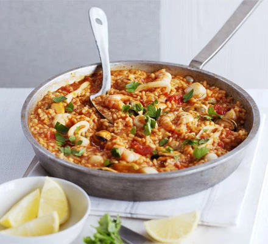

Paella

Ingrendients
- 1 tbsp olive oil
- 1 onion, chopped
- 1 tsp each hot smoked paprika and dried thyme
- 300g paella or risotto rice
- 3 tbsp dry sherry or white wine (optional)
- 400g can chopped tomatoes with garlic
- 900ml chicken stock
- 400g frozen seafood mix, defrosted
- 1 lemon, half juiced, half cut into wedges
- handful of flat-leaf parsley, roughly chopped
Method
- Heat the olive oil in a large frying pan or wok. Add the onion and soften for 5 mins.
- Add the smoked paprika, thyme and paella rice, stir for 1 min, then splash in the sherry, if using. Once evaporated, stir in the chopped tomatoes and chicken stock.
- Season and cook, uncovered, for about 15 mins, stirring now and again until the rice is almost tender and still surrounded with some liquid.
- Stir in the seafood mix and cover with a lid. Simmer for 5 mins, or until the seafood is cooked through and the rice is tender. Squeeze over the lemon juice, scatter over the parsley and serve with the lemon wedges.